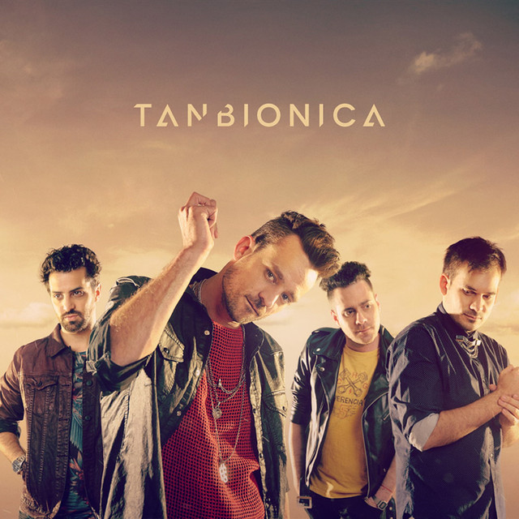

Información sobre Tan Bionica
Tan Biónica fue un grupo musical de Argentina surgido en Buenos Aires en el año 2002
Fueron reconocidos por sus discos Canciones del huracan,Obsesionario, Destinología y Hola mundo.
Mejor banda pop y Revelación del 2010. El disco Obsesionario estaba integrado por doce canciones imbatibles y abría con los singles “Ella” y “Beautiful”, las predecesoras de una de las baladas más logradas del grupo: “Obsesionario en LA Mayor”
Actualmente el grupo se encuentra disuelto, mientras que los hermanos Moreno Charpentier, Chano y Bambi se desempeñan como solistas y aun asi 6 años despues de su separacion sus canciones siguen pocisionadas en rankings de canciones mas escuchadas de la actualidad.
